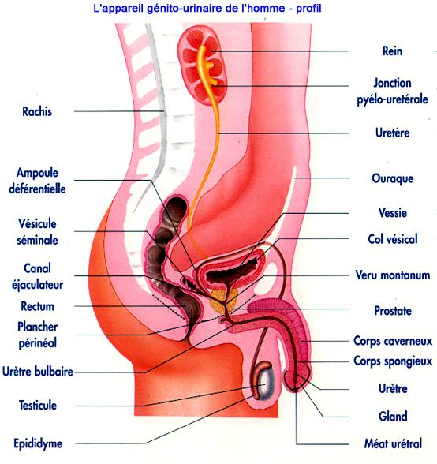
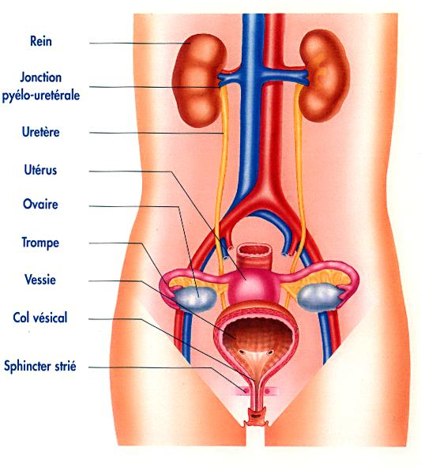
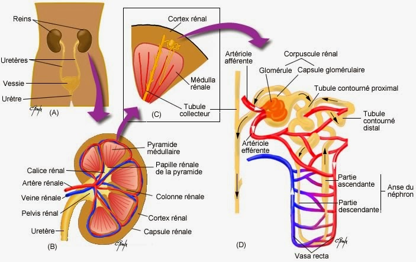
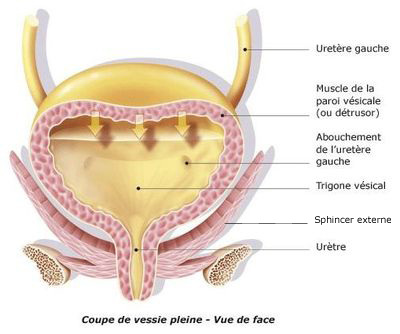

L'appareil urinaire

Les reinsLes reins sont au nombre de deux : l'un droit, l'autre gauche. Ils sont situes dans la cavite abdominale de part et d'autres de la colonne vertebrale dans la loge renale.
Leur poids est de 125 a 170 g, leurs dimensions moyennes sont 12 cm de long, 6 cm de large et 3 cm d'epaisseur.

Configuration interieure du rein
Le bord interne de chaque rein est creuse d'une cavite profonde de 3cm environ, le sinus du rein ; l'orifice de cette cavite est le hile. C'est au niveau du hile que les vaisseaux du rein penetrent dans celui-ci et que les voies excretrices de l'urine en sortent.
Le fond du sinus du rein est compose de papilles : saillies conique percees d'orifices.
Le rein est constitue de deux parties differentes :
- Une partie centrale, la substance medullaire, formee par la juxtaposition de segments de forme conique, les pyramides de Malpighi ; le sommet de celles-ci forme les papilles.
- Une partie peripherique, la substance corticale.
Le rein est forme par la juxtaposition d'un tres grand nombre d'unites elementaires, les nephrons. Le nephron est un element elaborant l'urine.
Chaque nephron comprend differentes parties :
- Le corpuscule de Malpighi (segment initial) forme par :
- Le glomerule de Malpighi : reseau de capillaires arteriels : filtre le sang pour produire l'urine primitive ou filtrat glomerulaire.
- La capsule de Bowmann : element a double paroi entourant le glomerule communiquant avec le tube contourne qui lui fait suite.
-
Le tube contourne proximal qui se detache de la capsule de Bowmann : reabsorbe 99% du sodium avec une quantite proportionnelle d'eau. Cette reabsorption est un phenomene actif.
-
L'anse de Henle qui fait suite au tube proximal et se trouve dans les pyramides de Malpighi. Elle comporte 2 parties : la branche descendante et la branche ascendante. Son rele est de concentrer l'urine.
-
Le tube distal fait suite a l'anse de Henle. C'est a ce niveau qu'est elabore la renine.
-
Le tube collecteur de Bellini qui fait suite au tube distal. Il traverse la pyramide de Malpighi puis s'unit aux tubes collecteurs des autres nephrons et forme un canal qui s'ouvre au sommet de la papille par un orifice, le pore urinaire.

Les calices
Les petits calices sont des tubes creux qui recueillent l'urine emise par les pyramides.
Ces petits calices s'unissent entre eux et forment les grands calices.
Le bassinet
Le bassinet resulte de l'union des grands calices. Il constitue un reservoir doue d'un pouvoir contractile qui collecte l'urine et la deverse dans l'uretere.
L'uretere
L'uretere est un conduit de 25 cm de long et de 3-5 mm de diametre qui relie le bassinet a la vessie.
L'uretre est doue d'un pouvoir contractile, grece a ses mouvements peristaltiques il achemine l'urine vers la vessie.
La prostate
La prostate est une glande annexee a la partie initiale de l'uretre masculin. Elle est situee en arriere de la symphyse pubienne, en avant du rectum, en dessous de la vessie, entre les deux muscles releveurs lateralement de l'anus.
Elle est traversee par l'uretre, l'utricule prostatique et les canaux ejaculateurs.
Elle est constituee par un ensemble de petits culs-de-sac glandulaires avec leurs canaux excreteurs qui secretent un liquide de dilution pour les spermatozoedes, le liquide prostatique.
La vessie
La vessie est un reservoir musculo-membraneux dans lequel l'urine s'accumule dans l'intervalle des mictions. La vessie a une capacite de 800ml. L'envie d'uriner apparaet vers 300ml.
La surface interne presente 3 orifices dessinant un triangle appele le trigone.
L'ensemble des fibres musculaires de la vessie constitue le detrusor.

L'uretre
L'uretre est le canal excreteur de la vessie. Il se termine par le meat uretral.